6' 4" · A classically trained singer with the roster's largest mass and a dignified, formal presence. Very broad, block-like, heavy and centred with large formal hands; never sloppy, comic or hunched. His recognition cues are a bald crown, a full grey beard and moustache widening the head in hard deliberate tone bands, a very broad block-like torso, a centred white bow tie and shirt front, and large folded hands, all readable without facial detail; no headwear. He wears a steel evening coat with clear lapels and short coat tails, a centred white shirt front and white bow tie, dark formal trousers, and polished dark shoes. He holds nothing: no microphone, headset, stand, cable, handheld prop, cane or weapon; his large hands stay folded or calmly overlapped at the front. His ready stance is heavy and grounded, feet set beneath the body, shoulders broad, chest open, hands calmly folded. Palette, as base/shadow/highlight per material: dark #20232B / #101217 / #3A3E48; white #F1EEE5 / #BDB9AE / #FFFFFF; metal #6F747C / #34383E / #B5BAC0; steel #4A4E54 / #272A2E / #747982; shirt #F0EEE7 / #B9B7B0 / #FFFFFF; skin #A9684E / #68402F / #CD8A69; beard #77797D / #44464A / #B0B2B5. Never draw: microphone of any kind; weapon or cane; top hat or monocle; comic obesity; sloppy posture; exaggerated anger; detached prop; top hat, monocle, cane, or weapon; comic-obesity tailoring; sloppy open clothing; logos, text, or real brands.
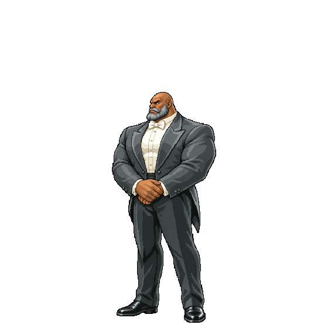
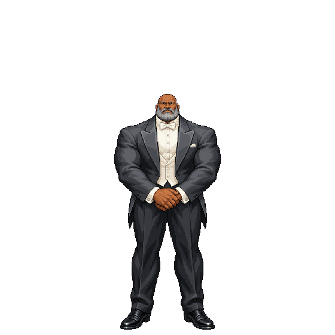
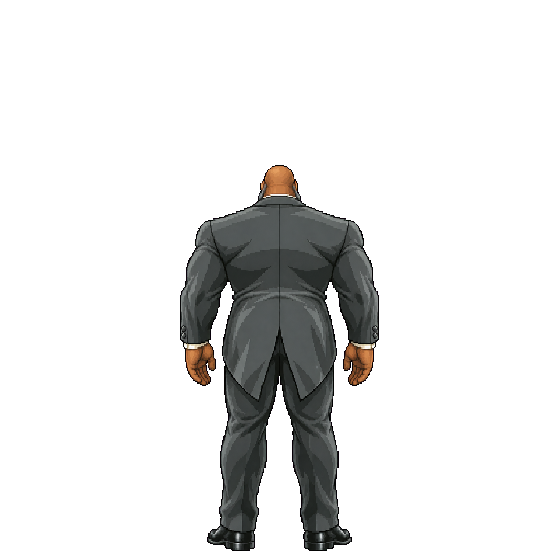
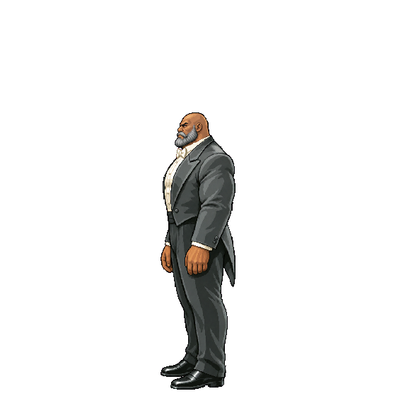
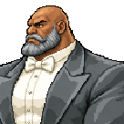
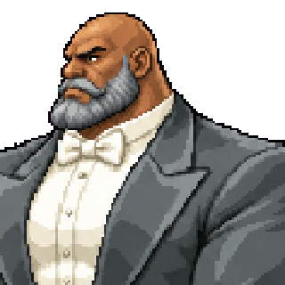
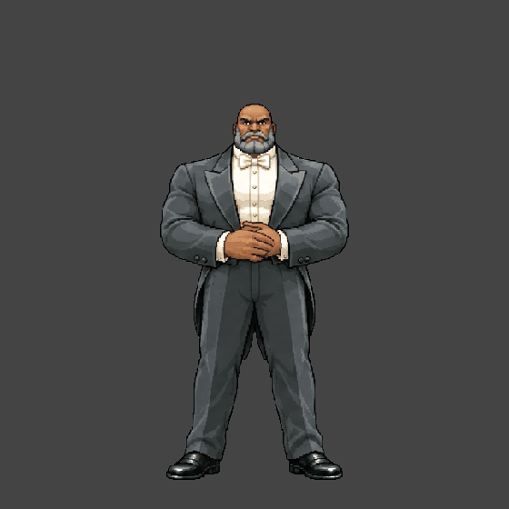
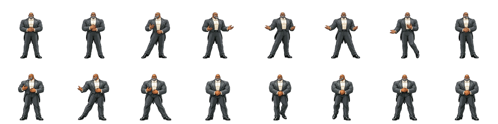
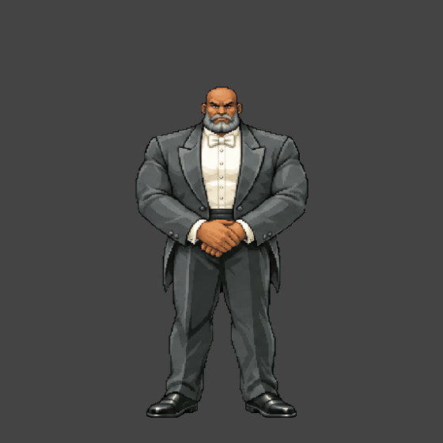
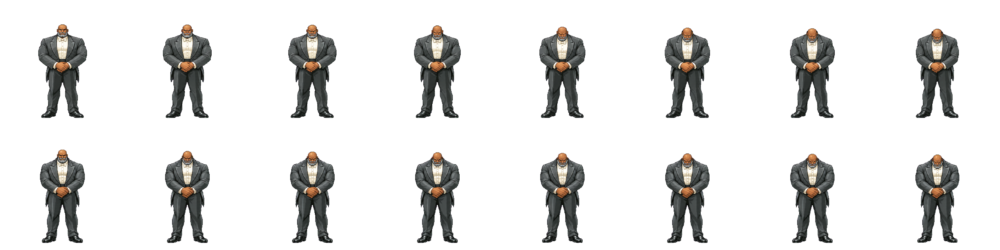
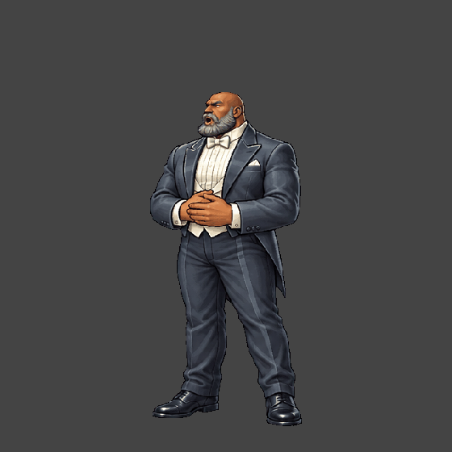
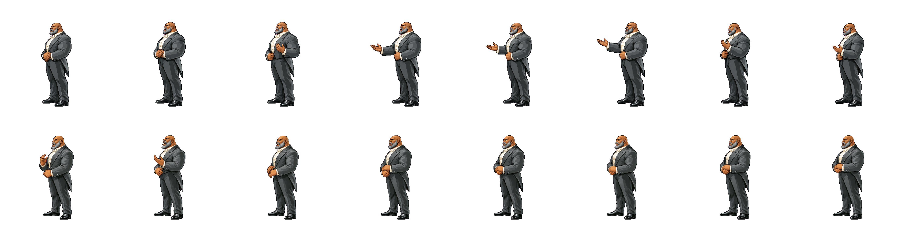
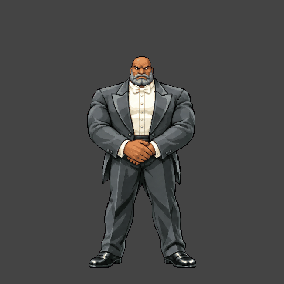
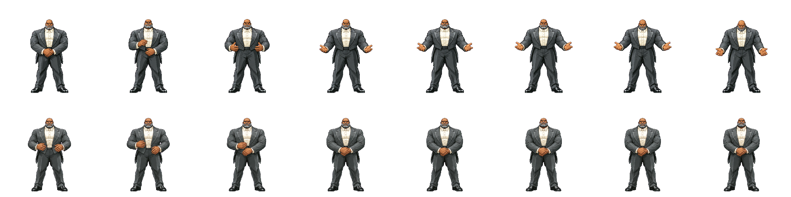